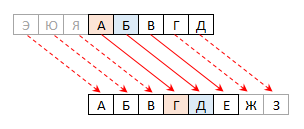

Шифр деген не?
Шифрлау - Рұқсат етілмеген қол жеткізуді болдырмау үшін деректерді кодтау процесі. Шифрланған хабар ашық кілті бар алушыдан басқа кісілер үшін оқылмайтын түрде болады. Ашық кілт шифрды шешеді, себебі ол жіберуші хабарды шифрлау үшін пайдаланған құпия кілтке сәйкес келеді.Шифр орнына қоюдың бір түрі деп те атауға болады. Шифрде әрбір таңба ашық мәтінде әліпби бойынша тұрақты көлемде оңға немесе солға жылжытылып отырады.
Шифр түрлері
